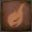

Ludwig, The Accursed |
|||
|---|---|---|---|
 |
|||
| General Info | |||
 |
 |
Location | Drops |
| 16,658 | 34,500 | The Hunter's Nightmare Underground Corpse Pile |
Guidance Holy Moonlight Sword |
| Defenses Format: Phase 1 / Phase 2 |
|||
 |
 |
 |
- - - |
| 140/ 140 | 140/ 140 | 140/ 140 | - - - |
 |
 |
 |  |
| 140/ 140 | 126/ 252 | 98/ 119 | 126/ 168 |
 |
 |
 |
 |
| 999/ 999 | 999/ 999 | Yes/No | No |
Ludwig, The Accursed is a Boss in The Old Hunters Expansion for Bloodborne. He was also the founder of the Healing Church Workshop, and first hunter of the Church. He is also known under his official title; Ludwig, The Holy Blade, and adopts this title in the second phase of his fight.
"Aah, you were at my side, all along.
My true mentor...
My guiding moonlight..."
Ludwig General Information
The boss will only be fully visible after entering the room and initiating the cutscene. After the cutscene plays, the fight begins immediately.
This fight has two phases:
- Phase 1:
- Ludwig the Accursed is presented as a crawling beast which implements savage attacks, all the while roaring and screeching.
- Has several breakable body parts, the Head of which will open him up to a visceral attack.
- At 75% health, Ludwig gains 2 new attacks.
- A deadly spewing attack that deals Arcane damage. Has 2 variations, direct and spraying.
- His deadliest attack in this form, a charge attack that he briefly signals by screaming.
- Phase 2: Ludwig, the Holy Blade
- Upon reaching 50%, a cutscene will play where Ludwig becomes more composed, stands up and draws his sword.
- After the cutscene, Ludwig, the Holy Blade and the player are placed in set positions in the arena and the fight continues.
- Summoned players will not have their positions changed.
- Ludwig will now have a completely different set of moves and behave like a brand new boss.
- Will still have breakable body parts, with the bottom front part of the body being susceptible to visceral attacks.
- At 25% health, Ludwig gains a new attack
- Ludwig can now raise his sword to the heavens. This will trigger a blast which is then followed by him flinging a massive shockwave at you.
Location
Drops
- Guidance
- Holy Moonlight Sword
- Equip a chest piece from any clerical set, talk to his severed head near the stairs, and say "Yes"
- If you do not have any church related chest, or answer "No", you can simply kill him
- Can be missed if Laurence, The First Vicar is defeated before interacting with the severed head
Dialogue
Upon entering boss arena:
"Ahh, ahh, please... help us... Ah...
An unsightly beast...
A great terror looms!
Ahh... Ludwig the Accursed is coming.
Have mercy... Have mercy upon us..."
NOTE: THE ABOVE DIALOG DOES NOT BELONG TO LUDWIG, BUT RATHER AN AS-YET-UNNAMED LIVING CORPSE. This character can survive the battle with Ludwig and may be spoken to afterward, though he will only further cackle maliciously.
Dialogue after Ludwig reaches half of his health bar:
"Aah, you were at my side, all along.
My true mentor...
My guiding moonlight..."
Dialogue after defeating Ludwig while NOT wearing Church Hunter attire:
"Good hunter, have you seen the thread of light?
Just a hair, a fleeting thing, yet I clung to it, steeped as I was in the stench of blood and beasts.
I never wanted to know, what it really was. Really, I didn't."
(He will then proceed to wail and howl wildly until you kill him, or speak to him while wearing Church Hunter attire.)
Dialogue after defeating Ludwig while wearing Church Hunter attire:
"Good Hunter of the Church,
Have you seen the light?
Are my Church Hunters the honorable spartans I hoped they would be?
(Answer yes)
Ah, good...that is a relief.
To know I did not suffer such denigration for nothing.
Thank you kindly. Now I may sleep in peace.
Even in this darkest of nights, I see...the moonlight..."
(Answer no)
Oh, my.
Just as I feared.
Then a beast-possessed degenerate was I, as my detractors made eminently clear
Does the nightmare never end?!"
Strategy & Tips
- He's easily one of the most violent bosses in the game, leaving little to no space for you to breathe, which means most of the fight will consist of you crazily dodging him. Use the best stamina rune you have.
- (pro-tip) A common mistake is to focus on excessive dodging. Ludwig will just keep coming. Instead take the fight to him, he's easier to stun than most bosses and a lot of his attacks miss if you can get under him. Make good use of your rally potential.
- Staying under him is a more or less safe tactic as some of his attacks will usually miss you.
- His sides (mainly his left one) are quite vulnerable; some good hits there will make them bleed badly and the boss will be stunned for some seconds.
- Fire Paper and Bolt Paper largely deal the same amount of damage to Ludwig on a quality build character.
- Ludwig does not take extra damage from Serrated.
- You can summon Valtr from the area in front of the boss room providing you have joined The League and you have the Impurity rune equipped. He wields the Whirlgig Saw. Valtr is particularly good at distracting Ludwig due to his ability to heal up to 5(? needs confirmation) times and thus survive for long time.
- You can also summon Old Hunter Henriet just below the stair turn left after the Defiled Church Lamp. She wields Kirkhammer with the Repeating Pistol while wearing the Hunter attire with cape.
- You can also summon Confederate Younger Madaras Twin near the place where the Butcher Set is. You must have joined The League and have the Impurity rune equipped. He wields the Hunter's Axe and Hunter's Blunderbuss.
Key Strategies (From the Old Hunter Collectors Edition Guide)
Ludwig's left and right sides can be injured individually and will take additional damage from all attacks thereafter; he will also be temporarily stunned when one side is injured allowing for a few more swings before he recovers. Unlike many other bosses Ludwig will not regenerate damaged limbs, so take full advantage of this and focus on one side for optimal damage or injure them sequentially to keep him immobilized. Repeated blows to the head during Phase 1 will stagger him, at which point you can perform a visceral attack on his face. If you have a Cannon, it cane be used with Bone Marrow Ash to attack Ludwig's head and stagger him very quickly. During Phase 2 Ludwig will stagger after sustaining enough damage, at which point a visceral attack be be initiated from the front of his torso. His sides can no longer be injured at this point., but breaking his super armor will still cause him to stumble. The transformed L2 attack of Whirligig Saw is supremely effective for quickly injuring Ludwig's legs, especially when augmented with Fire Paper; during Phase 2 it is one of the fastest and easiest ways to stagger him.
Hunter's Strategy
Phase #1: Ludwig, The Accursed
His first phase is easily the hardest part of his fight, as his fighting form is annoyingly random and un-organized. The first few tries against him should be used to study his movements, his timing and find open spots in his attacks. Once you've learned the timing of his attacks, you can take the fight to him. A general tip is to close in and get out quickly, never stay close to him for too long at a time. Both his sides are vulnerable for attacks, while placing yourself under him is generally a good strategy. (Aim for his back legs.)
- He has an attack where he leaps towards you and claws away with his right arm, this is a good chance to dodge under him and get a few hits in before retreating.
- He has two attacks that look largely the same when they start; one he jumps up and comes crashing down right away, while the other he lingers in the roof a little bit. A general tactic is that when he jumps up, you start to run in a direction, straight away from him. (This greatly minimizes the chance of being hit by him.)
- If you stay too close for too long, then he will do a few quick slashes before jumping away, this is a very dangerous move as it is fast, don't stay close to him for too long!
- He has two long range attacks, one that tracks your movement over a longer period of time and one which can be compared to a quick "shotgun blast". There is no need to bother trying to get close to him when he uses the quick blast, as it doesn't last long enough. However when he starts to charge the tracking one, start to circle around him on your right (his left) and get under him. (The long range attacks deals massive damage over several hits, being hit once or twice shouldn't be too harmful.)
- Never stay or attack while being directly behind him as he will knock you down with his hind legs. Approach his sides instead.
- It's highly recommended you summon Valtr, Master of the League for this fight, as he can hold the bosses attention and tank pretty much all of his attacks. Beware though, once he uses around 5 bloodvials, he will no longer heal himself.
Phase #2: Ludwig, The Holy Blade
Ludwig becomes more graceful and organized when he picks up his blade and enter his second phase, but don't be fooled, he is still very aggressive. His range is increased and he becomes harder to hit as he stands up more, limiting the area you can hit him in. The best way to approach him is to not wait for him to attack, but to close in on him right away. Dodge through his attacks, not away from them. Be aware as he fires energy waves from his slashes.
- He can slash twice, which will make both hits send out an energy wave towards you. You can dodge through these energy waves though, making it a good timing to close in on him.
- He has a larger charged version, be aware of this move as the reach and coverage of this move is huge. On top of that it can hit you several times if you stand to close to him. Best way to avoid this attack is to move to his left and dodge under his blade.
- He has a charged stab attack which is fairly easy to avoid by dodging to your right or left. (It really doesn't matter.)
- He has two Area of Effect (AoE) attacks which can be proven to be dangerous. The first can be identified by when he holds blade downwards to the ground. This is standard AoE that he has, nothing special to it and it can be avoided by simply dodging backwards. The second AoE can be identified by when he holds his blade upwards in the air and this attack is a "fake" of sorts. The attack starts with a standard AoE but he follows it up with a slash to the ground that greats a massive energy wave in-front of him that will linger for a bit. (This will most likely kill you if you are hit!) The best way to avoid this attack is to back off the moment he points his sword upwards, when the initial explosion happens, you should close in on him and circle around him. This will allow you to avoid his attack and deal a good amount of damage against him.
Glass cannon strategy (NG+2, BL 100)
First phase: Ludwig, The Accursed
- Keep him locked on and walk left all the time to make dodging his combo starters easier. When he squirts go right of course but other than that moving left makes this fight easier.
- The main tactic is to get under his stomach while he is attacking and do 2-3 hits before dodge stepping away. If you keep moving to your left only really hard to dodge move is his nose charge attack: he walks towards you and pokes you high in the air if it connects. The only way to deal with it is to learn how to identify the attack early so you dodge left or right instead of towards his stomach.
- Don't stay below him! Try to be under him only when he is attacking and get out once his combo ends. Check the attack descriptions to see when you can dodge step below him
- Safe timings to heal are rare. The best one is when he is squirting water and can't hit you. Other safe time is when he has charged or moved away from you so that you are behind him but not too close to trigger the mule kick. That way he has to turn around which gives enough time to heal once.
Second phase: Ludwig, The Holy Blade
- This one needs a lot of practice and is all about dodging. Fortunately there aren't too many combos to memorize. Unfortunately like Fume Knight in Dark Souls 2, you have to wait longer than normally before hitting the dodge button as he can delay some swings occasionally.
- Keep in mind Ludwig mostly does at least 3-4 swings before his combo is over. You have to concentrate on dodging them all individually and not just spam dodge.
- You can do 1-3 hits and then retreat depending on the opening but keep in mind when you stagger the boss a little KEEP ON HITTING! Few extra hits will grant you a chance to visceral attack. That is the most important thing in this phase: get a v. attack every time you can.
- Slowly approach him while dodging and let him come to you. Don't try forcing your way in to attack. Best openings are his poke and two approaching slashes. Wait for them.
- The super sword buff attack is not like any other attack in Bloodborne. When he lifts his hands and starts to charge it get as close as you can. You might get hit by the early AoE attack but you still have time to get up and react to the dangerous sword smash. Once he screams right before he drops the sword keep dodging left or right multiple times as the sword's effect lasts for a while. This is where staying close helps as he can't turn his sword while dropping it fast enough to catch you. If you are far away it will hit you and will kill you.
Co-Op Strategy
Whether you're bringing in Valtr or another player with you, co-op does not necessarily make this fight any easier, but it definitely makes it a lot less hectic.
Phase 1 - Ludwig, The Accursed
- As with the above strategies, pay close attention to his moves. When you walk into the boss room pick a direction, left or right and move diagonally forward. As soon as you hear him scream roll forward. He'll land on top of you but the iframes will keep you from taking damage
- Stick to his flank as if you get behind him you'll take damage from his kicking legs and if you get in front of him you'll just get headbutted. Ideally, attack him from both sides and you'll stagger him in no time
- If you take damage, heal up as quickly as possible. Ludwig has a couple of combos that can devastate your HP
- If you notice your co-op partner is in trouble, get in front of Ludwig, swipe at his head and fall back. He'll follow you pretty reliably, giving your partner a chance to heal and recover
- When Ludwig leaps up into the air, a slam down will soon follow. Start rolling as soon as he does this and keep rolling until he lands. He should miss you.
Phase 2 - Ludwig, The Holy Blade
- When the cutscene finishes, Ludwig will be sitting upright and be holding the Holy Moonlight Sword. He is incredibly dangerous in this phase as not only is he fast, he hits hard and he has a few attacks that you won't have encountered in Bloodborne.
- Take turns to bait his attacks. It's safest to attack him from the rear so take turns to be in front of him, holding his attention while the other gets to his rear legs and attacks
- For some reason, in the second phase he is weak to Bolt attacks [can someone confirm this?] so a Tonitrus, bolt paper or Tiny Tonitrus are well advised
- When he starts to charge his sword for either of his AoE attacks, back off slightly, but make sure to get in for a couple of hits while he recovers
- Both players should be very aware of the magic blast attack. If either of you are caught in it, there's a good chance it will kill you, so be on the look out for him raising the sword high above his head. When he does that, circle him and get behind him. It's a good window to do a large combo on him.
- If you summoned Valtr and successfully defeated Ludwig without Valtr dying, you will be rewarded +1 vermin.
Videos
((Please respect these video posting guidelines))
See differences from TGS boss kill
- - VaatiVidya- Ludwig General Strategy
- - Kamies- Ludwig, NG+2, BL100, Saw Cleaver, dodging and healing times
- - JudasBlitzkrieg- Ludwig, The Holy Blade Co-op Strategy
- - Mhazard- Ludwig Dialogue
Moveset without Holy Blade (First Phase)
| Attack Name | Attack Description & Counter |
|---|---|
| Jumping Hand Slam | Usually the first attack he does. Jumps towards you and smashes the floor. Only the hand does damage to you. Easily dodged towards him and gives an opening for 1-2 attacks. |
| Horizontal Slash | Horizontal slash from your left to your right. You can't dodge through this, so just stay back. May follow-up with Horizontal Strike. |
| Horizontal Strike | Strikes you with the one hand to your right with extremely small wind-up, can be done alone or just after a horizontal slash. Either dodge into the body for some hits or dodge back. |
| Diagonal Slash to Combo | Strikes the ground in front of him, after a small delay brings it back up with sparks and then combos forward. Either dodge into him between his first and second strike, or dodge just after his second strike. One of the most reliable ways to get hits. |
| Two-Bite Lunge Combo | Snaps his jaws at you twice in succession then lunges forward. Stay back for the first two bites and then dodge into him to avoid his lunge. |
| Short Charge | Begins pacing towards you and tries to pummel you twice before leaping slightly into the air and landing. Usually, transitions into a combo. Dodge back for the first pummel, if you dodge that you won't get hit by the second one. After that he makes a small jump, jump to the left or into him. You may or may not be able to land a hit. |
| Three-Step Trampling Strike | If you stay under him he may begin this move. 2 quick stomps that lurch him slightly forwards and then after a small delay a horizontal strike with his arms and head. Dodge into him or to your left. After the two stomps dodge either forward or backward. Do not dodge sideways. |
| Disengaging Slashes | When you're close will strike you with his hands and subsequently leap back. Just dodge backward. Gives you a good chance to use a blood vial. |
| Headbutt | Relatively weak strike with his head, but with small wind-up. Usually, does this when you've closed up to him or he's closed up to you. Dodge backward or into his body. A possible follow-up to Horizontal Slash. |
| Jumping Body Slam (Belly Flop) |
Jumps high in the air and crashes down. Listen to his scream while he jumps. When the scream is about to end hit the dodge button to avoid getting hit. If you're far back enough you keep the lock-on and he can't hit you. Possible R1s to his face. |
| Delayed Jumping Body Slam | Boss stays airborne for a while before coming crashing down. Once you see blood dripping down from the ceiling begin to spam dodge or sprint in any one direction. Lands after 3 seconds. |
| Mule Kick | If you stay behind him too long he will do a powerful two legged kick like a horse or a donkey. Launches you back. Real bad news. Stay to his sides. |
| Arcane Hose | His other head with spew arcane damage that follows you, dodge or walk to your right. Be wary of the horse head, as you close the distance too soon the horse head will end up blocking your escape. Keep your distance until you pass both of his heads. |
| Arcane Spray | The other head fires arcane damage in a cone in front of him. Does not follow you. Either dodge to your left or to your right. Usually a follow-up to Arcane Hose. |
| Charge | Paws the floor, screams, and then launches towards you. The charge itself is about a second after the scream begins. Another way to tell is for when the low-pitched scream gets overlayed onto the higher-pitched scream. Note that he can't change direction while he's in the middle of the actual charge. Make a dodge to your left just before or just after he begins the actual charge and you'll be fine. |
Moveset with Holy Blade (Second Phase)
| Attack Name | Attack Description & Counter |
|---|---|
| Two Approaching Side Slashes (can do only one if you are far away) |
Lowers the blade to his right side slowly and then slashes the ground on his right side (your left) moving forward. Continues with the similar slash on the other side. Dodge the first slash towards him to get close. In there you can either hit once with a fast weapon and then dodge or concentrate only on dodging the second hit and then attack. |
| 2 retreating slashes to smash and slash | When close to him he two hands the blade, lifts it up to his left side (your right) pointing it towards the roof and then slashes two times while backing off. Then he over head smashes the blade in front of him and continues with a single slash. When you see the starting pose just keep dodging backwards and concentrate on dodging the smash for sure. |
| Single left hand slash, pause, second left slash to two heavy smashes | Very dangerous combo. Does a single left hand slash that is easy to dodge and for a while it looks like that was it but then continues with the second left slash and two devastating smashes. The most important thing is to learn how to identify the combo early. Dodging it is pretty simple when you know what he is doing. |
| Sword trust (poke) | A single sword poke. Quite fast but can be used to dodge towards him and attack |
| Two projectile slashes | Swings the sword twice to create two projectiles traveling towards you. Don't try to dodge towards him and attack. Just dodge left or right twice. |
| Heavy projectile | Stops for a little charge and then swings the sword once to create one wide projectile. Don't try to dodge towards him to attack. Just dodge left or right. |
| Ground Flash AoE | When you are near him he stops, lifts the handle of the sword up, points the dangerous end down and pushes the sword on the ground creating an explosion. Just dodge a few times away from him. You can shoot him during the slow attack for free. |
| Blasting Zone | He slowly lifts the sword in front of his face (like in the cutscene), buffs it creating a low damage blast that staggers, lifts the sword above his head, screams and smashes the sword in front of him creating a massive and long lasting shockwave. Once this attack is used the first time he can do it again after couple of minutes. To dodge this you need to be prepared. Once you see it is coming get near him or in the best case scenario behind him to avoid the smash complitely. Don't mind about the first blast just get near him. If you have no time to get behind him keep walking sideways and wait for his scream. Once you hear the scream smash dodge button multiple times to left/right to avoid the sword and to get away from the explosion. |
Notes & Trivia
- New dialogue will be triggered upon speaking to him after his defeat while wearing the chest piece from either the Executioner's, White Church, Black Church, Gascoigne's, Tomb Prospector or Choir Sets
- Ludwig was named after Ludwig Von Beethoven, the composer of Moonlight Sonata, suggesting Ludwig's affinity with the Moon.
- There is a glitch where after defeating Ludwig's first phase, the PREY SLAUGHTERED will appear and after watching the cutscene, he will freeze up and just die. No second phase at all with this glitch. Mostly happens when Co-op with other hunters.
- On the way from Nightmare Church lantern to Ludwig's boss room there is a barely alive corpse banging a gate. This enemy drops 5 Blood Vials every time you kill it. Great way to safe your echoes if you are having a hard time beating this boss
- Judging from the way he holds his sword, Ludwig appears to be left-handed.
- It is possible to lose your Blood Echos if you die right as Ludwig's first phase is over. Even though your health is zero the cutscene will still play and then when his second phase starts it will display that YOU DIED. You will not be able to recover your echoes from the boss arena.
- Various details like the two heads, his spewing attack and his executioner cape appear to be references to The Executioner's Chariot (DS2)
- In the Dutch version of Bloodborne, Ludwig's name has been incorrectly translated to "Ludwig and the holy blade".
- Pungent Blood Cocktail does not work, most likely because of the abundance of fresh and pungent blood in the room.
- Ludwig's boss theme is a waltz
 Anonymous
AnonymousI like to stompe his ugly head like that dude like godrick style
- Anonymous
- Anonymous
The most accursed thing about this boss is the run back to his arena
- Anonymous
- Anonymous
When he jumps in the air and hangs to the ceiling, wait for his initial loud roar to finish. Just before he plunges down, he will let out a quiet roar. If you dodge literally as soon as you hear it, you will dodge this attack perfectly.
- Anonymous
- Anonymous
So I'm a mad lad and have decided to fight ludwig at plus 3, my intention is to make a strength arcane, moonlight blade, and wwhurli gig saw, my plan is to kill Amelia at plus 0 gain acsses to the dlc, and get the whirli gig saw, then go back to old yharnum kill bsb and run the chalices until I can access the cummmfpk chalice and grind as much lvls as possible, plus 3 or 6 my weapon and face ludwig. My questions are will the whirli gig build beast blood quick, and is this manageable?
- Anonymous
After 5 hours, I finally beat this boss. Level 71 (idk but I felt under leveled) by far the hardest boss ive done in a Soulsborne game
- Anonymous
Kudos to whoever edited the name of his moonlight blast attack to "Blasting Zone", one of Squall's limit break finishers in FFVIII.
- Anonymous
I wasn't able to talk to his head after the fight, or rather, the head kept neighing like a horse but no words came out. has this ever happened to anyone?
- Anonymous
- Anonymous
My favorite boss in the entire series. The phase 2 reveal still gives me chills.
- Anonymous
What happens if the begging NPC at the beginning of the fight survives? Do they have any dialogue?
- Anonymous
- Anonymous
God, this was disappointing. It seems like a great fight, but I left the dlc until after the chalices and was WAY too OP for this fight. I was lvl 144 w/ Threaded Cane +10 483 ATK (Fast weapon) and 1895 HP. I literally just facetanked him and he only did one attack phase two before visceral. At least I'm planning on doing ng+'s
- Anonymous
Not sure if anyone knows this since it doesn't seem to be listed anywhere in the strategies above, but you can stun him during his "Arcane Hose" with a well-timed bullet, at least I could do that with the Blunderbuss. Naturally the Blunderbuss shot didn't work to stun him at long range, but can easily be tested with other firearms and may give an opening to attack as well following a successful shot.
- Anonymous
Valtr makes this boss a walk in the park. He deales heavy damage, is almost invincible and even hits the visceral attacks. Just beat this boss at first try in first playthrough thanks to him
- Anonymous
I wasn’t a fan of this boss until phase 2, I didn’t get the hype, especially because everyone seems to love this theme, and in phase 1 I thought it was really bland. On my third try I finally it phase 2, which I had already known existed, but god damn it was fun, and the theme almost killed me cause I was distracted.
TLDR: The real boss is that stupid ****er Witch of Hemwick. I kill that cage guy for the blood vials, but then I could never get passed the witch with my life. I don’t know where she comes from, but it’s impossible to avoid if you kill the cage guy, I spent a solid hour trying to find a way to kill it, and it only gave me 3 pebbles! Wtf fromsoft
- Anonymous
just realized how much similarity this guy has to artorias
1. both are in a dlc
2. both been mentioned in the base game as stuff of legends through item descriptions
3. both has fell to what they once fought against
4. everyone agree some of the coolest character of their respective game
- Anonymous
- Anonymous
- Anonymous
man this boss is the best boss ever, killed him on my 3rd try, THE OST!, AND THE ****ING SWORD!
- Anonymous
Get good bolt gems and +10 your LHB. I made an absolute fool of Ludwig, didn't need to summon any Old Hunters or co-op.
It sounds idivulous, but with proper timing, a ule viscerals, and enough olt damage to wake the Orphan, this fight is a joke.
- Anonymous
The best thing about this fight is the blood boy by the gate outside who gives you 5 blood vials every time you kill him.
- Anonymous
- Anonymous
Few things to say:
1. **** Ludwig
2. guide says co-op doesn’t make it easier which is BULL****.
Thanks to my bois Valtyr and Younger Madreas twin I just murdered Ludwig with ease
- Anonymous
Ludwig is so ****ing unfair. How am I supposed to dodge his attacks when the absolutely god tier OST forces me to headbang until I get whiplash and brain damage.
- Anonymous
- Anonymous
Weird how I easily destroy first phase, but get heavily destroyed by 2nd phase
- Anonymous
- Anonymous
Im pretty sure that his phase 2 voice sounds different in EU versions of the game apart from American ones, anyone feel this?
- Anonymous
got him to less than 25% hp, and bam one hit me with a new aoe moveset, never get him to 25% hp ever again, and yes im casual, i summoned npc and still struggling
- Anonymous
Never before has a boss made me go "... What?" more than Ludwig. Both mine and other people's experience. I don't get the people saying he's the best boss in Bloodborne, let alone all of FromSoftware's games, but I also don't get the people saying that he's the worst thing ever. Personally, I just don't like the aesthetic of the fight as I feel there's too much blood and dust effects that cover the screen and I can't see anything that's going on (this might just be me as I get overwhelmed easily by that sort of thing). Ludwig's design itself just isn't my cup of tea, but I can understand it from a lore perspective. I'm not sure if his attacks have weird hitboxes or I just suck (probably the ladder, except for his jump attack. That one is just awful in every way). One thing I agree on is that his theme is absolutely amazing, but that doesn't inherently make a fight good to me. For me he'll probably just sit with Gael in the "Okay fight I don't get why people are so obsessed with" box
- Anonymous
this was most likely the best boss of bloodborne. a perfect boss needs 4 things to be amazing. music,atmosphere,the gameplay and the lore so yeah let me explain
1. the music in the boss is just godly, so epic go listen to it
2.the atmosphere is just amazing. as you go to the boss area you see the cutscenes and holy sh.t theres huge beast coming to kill me and then it talks and warns you that it has been transformed into one but not fully,theres a spark of humanity still left in him since at the end of the fight he talks to you. the arena is full of dead guys
3.the gameplay is great. especialy when the midway cutscene plays. he wheilds his badass sword that he has and the voice line is just amazing . that is when the fight gets scary
4. ludwig was once the founder of the healing church and he turned into one of the worst beasts
IRONIC.
a bloodborne sequel is just never gonna happen but i want a prequel
i wanna play as him lol
he is one of my favorite bosses in the soulsborne series .
1.the four kings
2.the vordbt of the boreal valley
3.LUDWIG
- Anonymous
Everything about this fight is ****ing perfect, the design, the arena, the weapon the boss wields, the lore, and of course THE MUSIC. The only flaw with Ludwig is that he dies too quicly if you go to the DLC with end game gear
- Anonymous
I dont get the hate, its a fair fight in both phases and not even THAT hard, only real danger its in his charge, gotta say that bloodborne bosses is way more easy than DS3.
Be sure to open phase 2 with Cannon + Bone Marrow Ash and aim at his dong for an instant break. Repeating Pistol and Evelyn can do it as well, but you'd have to wait for him to start attacking to get the counter damage and pop it in one shot.
Besides, isn't it just more fun to blast a boss in the crotch with a cannon? :D
- Anonymous
Someone changed the wiki! It used to say "Ludwig the Berserk(May kentaro Miura rest in piece) rape horse" but now it says Ludwig, The Accursed.
- Anonymous
I don't understand why people like this boss so much, it think it's kinda bad but that's just me
- Anonymous
Don't mind me, just looking for that salty rage comment that demod showed in his boss showcase video
- Anonymous
Another Oceiros. They appearently wanted him to land hits on you no matter what so you are forced to stay aggressive. Problems occur if you don't have the HP to trade and your weapon does no damage.
- Anonymous
I absolutely loathe this stupid boss. I hate him, I hate his stupid design, I hate his stupid campy dialogue during the fight, I hate his forced in fan service moonlight sword, I hate how hard he hits and how he moves around and is hard to hit back with short weapons. I just hate him.
- Anonymous
- Anonymous
Alright yeah so Valtr absolutely curb stomps Ludwig. Never played the DLC before, summoned him on my first attempt just to get a longer look at Ludwig's moveset before my "serious" attempt, and this guy just facetanks everything Ludwig throws at him, knocks him into phase 3 while I'm standing around holding my ****, then finishes him off with the visceral, pure disrespect, chucks me a vermin like it's a participation ribbon, and just bounces. Legend.
- Anonymous
Did anyone else figure out there are two Ludwig pages? One links from the Bosses page with one set of info and this one links from the Hunter's Nightmare walkthrough
- Anonymous
Alright yeah so Valtr absolutely wrecks Ludwig. I summoned him for my first attempt so I'd maybe have more time to look at his moveset and see what I'm up against. Dude singlehandedly knocks him into phase 2, facetanks his sword kamehameha, and finishes him with a visceral, chucks me a vermin like it's a participation trophy, and just peaces out, all the while I'm just standing around holding my **** trying to figure out what just happened. Absolute legend.
This is such a fun fight, in the beginning you are whittling down an unpredictable nightmare and the fight is incredibly chaotic, but the second phase comes and a clarity, I daresay a calm falls over the fight and what once was a brutal melee becomes more of a dance. These are some of the many reasons that this boss is one of the best.
- Anonymous
This boss is so ****ing hard, how am I supposed to beat it without jamming the amazing music??
- Anonymous
To be honest I didn't really like his first phase moveset at first but upon learning it later on, I noticed of how many moveset there is and how actually fun it is to dodge around to. Favorite boss 99/10.
- Anonymous
Considering how some of the cut content was given new life in Sekiro (namely the white snake), I wonder if their original plan was for us to behead him in phase 1, then he'd pick up his sword and head and fight us à la Guardian Ape. Maybe that's even why he has that second eye-filled mouth-stump.
- Anonymous
Wooden shield works wonders on phase 1. He's just too un-predictable and insane to dodge *everything*.
- Anonymous
- Anonymous
Need level 70ish person to help on NG now if possible world wide matching. No password.
- Anonymous
A small word of advice: Don't summon anyone to help you. If you struggle through it, you'll be able to truly appreciate the boss. I, unfortunately, summoned the NPC, making the fight both a million times easier and a million times less fun.
- Anonymous
- Anonymous
- Anonymous
- Anonymous
- Anonymous
I was just super aggressive with the +10 pizza cutter and run away when he plants his sword in phase 2. Managed to stun him and visceral attack once in his first phase and once in the second. Wasn’t that difficult.
- Anonymous
Any reason to talk to his head? I just killed it without talking to it and it dropped the holy moonlight sword.
- Anonymous
After about a million tries I finally beat this MF, BL76 str build with +9 pizza cutter. I've never struggled with a boss so much in my life. By the time I finally got this dude I knew his phase 1 moveset more intimately than I know my wife.
Props to fromsoft though because despite the difficulty I always had fun with him, unlike some of the other hard bosses in soulsborne. In my last run I think I only used 2 vials, and it was easily the most intense experience I've ever had with a video game. Hats off to you, Mr. Miyazaki.
Now on to the rest of the dlc, lol.
- Anonymous
- Anonymous
- Anonymous
Only 13 percent of Ps4 players earned a trophy for beating him. I don’t think some of y’all beat him frfr. Just trying to fit in LMAO
- Anonymous
Beat him third try on my own, I guess I got lucky. I can see how people can struggle against him tho
- Anonymous
- Anonymous
- Anonymous
- Anonymous
He prooly dresined I have beaten the deamon of hated he more hes tracking is op and some of he's attacks of tell and I'm 80 something and I'm not bad I stared playing when I was 6 now 12 I'm on ng plus 5 w dark souls 3 bad desing
- Anonymous
I dont like his moveset of his first form. He is sliding on the ground, and that's not in adequation with his animation. Very difficult to get a hit. He can jump, charge, his moves are too erratic at this point... NG+4 becomes bull****.
- Anonymous
"On the way from Nightmare Church lantern to Ludwig's boss room there is a barely alive corpse banging a gate. This enemy drops 5 Blood Vials every time you kill it. This is a great way to save your echoes if you are having a hard time beating this boss."
The first time I heard that quiet but insistent clanging and followed it to its source I was like "huh, that's a weird little detail to put in the game" until a few seconds later I realised who/what it was... and I had to put the controller down and just sit with it for a minute. For whatever reason this tiny detail hit me more than anything else in Bloodborne with the unrelenting and eternal hopelessness of its world.
- Anonymous
And it happened that at the beginning of the second phase, the great Miyazaki appeared in the moonlight, handed Ludwig his trusty weapon and said the words: "Here Ludwig, take this and git gud!"
- Anonymous
Tips section seems a bit contradicting.
Tip#1: dodge like crazy.
Tip#2: don't dodge like crazy, rather stay aggressive
- Anonymous
I've found that quick weapons make this fight very manageable. Sticking close with Threaded Cane + Fire Paper tore him right up. He telegraphs everything and you'll learn the pattern by attempt 4, if you don't accidentally stun him to death beforehand.
- Anonymous
Sticking to his left is the most consistent strat solo. Valtr is a godsend if you can ever get him started but Ludwig has a problem of getting cornered vs AI partners which makes him all the harder to read and dodge.
- Anonymous
A strategy for Arcane builds (nearly got him):get a punching bag for ludwig, rip out bullets from your thigh, heal, A call beyond, rinse and repeat. Might need to finish off with your own weapon
- Anonymous
- Anonymous
So I started with dark souls three and loved the moonlight greastword, so when I started playing dark souls remastered I just had to have it, and i am loving it, soon though I will claim the holy moonlight greatsword
- Anonymous
- Anonymous
Lame game for incels and virgins to vent out their sexual frustration and micropee complex
- Anonymous
- Anonymous
SOMEONE PLZ GIVE ME A PS4 SO I CAN PLAY BLOODBORNE :((((((((((((((((((((((
- Anonymous
Ridiculous looking boss throws a tantrum with generic music. Fanboys: It's a masterpiece!
- Anonymous
Valtr has no chill the dude got Ludwig open for a visceral for me and distracted him while i hit Ludwig from behind and he was surviving and pumping in good damage...he carried my nub casul ass
- Anonymous
LUDWIG GOOD COOL MUSIC!!!!!! MOONLIGHT SWORD!!!! WOW VERY GOOD FROMSOFT!!!! TAKE MY MONEY SONY!!!!!
- Anonymous
Level 91 on first play through with +10 hunter axe and Valtr, you can play like complete***** and just smack his ass when he attacks Valtr and then spam blood vials. It's like watching an elegant ballet
- Anonymous
One of the best bosses they've ever done. Challenging, fun and also straight up goosebump-inducing levels of awesomeness by the second phase. Amazing stuff.
- Anonymous
Finish him with a visceral and you'll get one of the most amazing death animations ever
- Anonymous
Just killed him for the second time ever. I'm using a Pure Arcane build(I'm only level 80 with 70 ARC and 28 VIT), and used a fire-converted spear-saw and Executioner's Glove. Took a little getting the hang of his attack patterns, but it wasn't as hard as I had recalled. My character is much squishier this time too.
- Anonymous
BL 83, Hunter Axe+7 and Valtr for back-up put this fight on easy mode and I got him first try. I have a harder time with the Beast Claw Hunter than I did with this boss. Just whale on him with the axe, let Valtr set you up for a few viscerals, and stay the hell outta the AoE for phases 3 & 4. I still have 4 vials and 18 bullets at the end.
- Anonymous
Jump attacks in any soulsborne games are bull*****but this one especially so. Instakill and the dodge window is too small.
- Anonymous
One of the two bosses I could not beat solo, other being Laurence. People say orphan is harder but for me he was manageable; augur probably helped. Still I don’t consider Ludwig unbalanced. That lable goes to the giant shark monsters in the fishing hamlet.
- Anonymous
So basically, the crack addicted spiderhorse is also a master swordsman
- Anonymous
That thing beside his horse head looks like a circumcized ***** that got its head cut off along with the foreskin. No wonder is spews white*****
- Anonymous
- Anonymous
Chikage in blood form with 40 bloodtinge and straight up aggression. He was stumbling and fumbling the whole fight. This fight, it pays to be aggressive.
- Anonymous
Ludwig is a first try Friday's type of boss. It’s like doing a crispy tre flip to crook down a 12 stair rail. EZ.
- Anonymous

His first phase was rinsing me, but once I got past that wall and saw him transform I thought "oh thank god" lol. Big dude with a sword is just way more readable than a 2 headed 100 limbed abomination. Awesome fight.
4
+10
-1